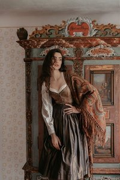
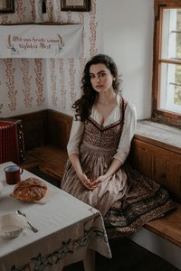

"Sonra da eve gideceğiz birlikte." demiştim Eadwig'e, onu sakinleştirmek için söylediğim bu cümle yola çıktığımızda fark ettirmişti üzerimdeki etkisini. Ev: yıllardır adımımı dahi atmadığım bu şato, benim için ne zamandan beri ev olmaktan çıkmıştı? Yalnızlığımla ve sınırsız özgürlüğümle geçen birkaç yaz ayı kadar.
Gemiden inip de yukarılara doğru tırmanmaya başladığımızda normalde geçtiğimiz aynalı kapıdan geçmemiştik. Surların arasından açılmış yeni bir kapının ağzında ise meraklı gözler bizi bekliyordu. Hala ada halkının içeri girmesini engelleyen bir güç hakimdi burada, ama bu güç artık saf korkudan ve belki bir noktada saygıdan kaynaklıydı. Yıllar önce hatırladığım o soğuk kasvetli hava yerine şu anda garip bir hareketlilik vardı adada. Eadwig'le beraber şatonun girişine kadar sessizce yürümüştük, bu sırada ayaklarım beni ters yöne çevirmek istiyor gibi yavaşlatıyordu. Gördüğüm kalabalığa doğru ilerlerken kendimi uzun süredir bu kadar dışlanmış hissetmediğimi fark etmiştim. Girdiğim ortamlarda herkesi tanıyor olmak, herkesle anlaşıyor olmak artık benim için gündelik bir şeydi. Fakat yavaş yavaş yanımıza ilerleyen Boleynlerin yanında bu durumun tam tersine döneceğini adım gibi biliyordum. Kuzenime verdiğim sözden ötürü yanından ayrılmadan devam ettim etrafı incelemeye. Heykeller... Taşa dönmüş bedenler. Anılarım gözümün önüne gelmeye başlamıştı bu yeni bilgiyle beraber. Evin etrafına serpiştirilmiş bu cansız insan bedenleri sanat eserleriymiş gibi sergileniyordu bize. Kaç tanesinin elini tutmuş, gözlerine bakmış, önünden geçip gitmiş ve ne olduklarını fark etmemiştim. Ormanda üstüne düştüğüm heykel gelmişti aklıma. O gün, her açıdan fazla travmatik bir gündü benim adıma. Hala bacaklarımda arı sokmasından kalma izler vardı. Üzerine düştüğüm o kadın heykeli düşüncesini, sonrasında yaşadığım acıyla birleştirmek midemin bulanmasına sebep olmuştu. Gün boyu bir şey yememiştik neyse ki midemde dışarı çıkacak tek bir parça bile yoktu.
Eadwig'i akrabaları benden uzaklaştırırken sadece durup şatoyu izlemeye başlamıştım. En sonunda kuzenimin bir hayli arkasında kalmış ve içeriye girmeden önce cübbemin iç cebinde taşıdığım tütünlerden birini yakmak zorunda kalmıştım. Ciyaklayan kadın sesleri arttıkça rahatsızlık katsayım da fazlalaşmış, beni o ortamdan uzaklaştırmayı başarmıştı. Zaten istedikleri de buydu, veya umursamadıkları diyeyim. Onlar beni umursamıyorken benim de onlara katlanmama gerek yoktu. Şatonun arkasına doğru yürümeye başladım, ezbere bildiğim yolları geçerken hiç bu kadar rahat olmamıştım. Hiç biri beni yakalar mı diye korkuya düşmemiş, arkamı kontrol etmeden yürümemiştim. Evin mutfağına açılan terasa ulaştığımda, iki bakanlık çalışanının da içeriden yeni çıktıklarına şahit olmuştum. Tütünden son bir nefes alıp boğazımı sıkıştıran dumanı öksürükle dışarıya attıktan sonra elimdeki son parçayı yere fırlattım ve içeri girdim.
Cin cüceler huysuzlukla kendi aralarında konuşuyorlardı, beni görünce
"Efendi Samuel..." diye tıslayarak susturdular birbirlerini. Umursamadım, aynı bu ev halkı gibi suratsızdı onlar da. Tanıdık bir yüz görme umuduyla etrafa bakınırken dışarıdan biri bana doğru seslenmişti.
"Kime bakmıştınız?" Fhatma'nın sesi olduğuna emin olarak döndüm o tarafa.
(out:fotosunu en aşağı bırakıyorum. npc listesine sonradan ekleyeceğim.) Evet, beklediğim gibi esmer bir kız endişeli gözlerle bana bakıyordu. Fakat farklıydı, beni de tanıyor gibi durmuyordu. Benim tanıdığım Fhatma'dan... Gözlerimle kızı süzmeye başladım. Üzerinde vücudunu saran bir elbise vardı. Belinin inceliğini ortaya çıkartan, göğüslerinin hacmini gözler önüne seren çok ince bir kumaşı vardı elbisesinin. Normalde topuz yaptığı saçlarını açık bırakmış, lülelerinin açık göğsünün üzerine düşmesine izin vermişti. Evet, farklıydı.
"S-Samu?" diyen o tanıdık sesi duyduğumda öksürerek gözlerimi göğüslerinden gözlerine çevirdim ve ne diyeceğimi bilemeyerek kızın suratına bakakaldım.
"Eeee...Ehm. Evet?" dedim. O da beni mi tanımamıştı? Gerçi 3 yılda çok değişmiştim gerçekten de.
"Doğru ya, En son görüştüğümüzde pantolonlarımın paçaları kısa geliyordu." dedim ortamı yumuşatmak için ve gülmeye çalıştım yarım ağız.
Pek gülünecek bir gün olmadığından o da tepki vermemişti bu dediğime.
"Seni buralarda görmeyeli uzun zaman oldu. Geleceğini düşünmemiştim." dedi kelimelerini dikkatli seçtiğini belli eden bir ses tonuyla. Geleceğimi ben de düşünmemiştim. Bu kararım nereye kadar uygulanabilir bilmiyordum ama zorunda kalmadıkça dönmek istemiyordum adaya. En son Eadwig'le deniz kenarında ettiğimiz kavgadan sonra çekip gitmiştim; şatoya dahi dönmemiş, hava aydınlandığı gibi bir gemiye atlayıp Londra'ya dönmüştüm. O kavganın üstünden çok sular akmıştı ama bu konum benim için kötü anılarla doluluğunu yitirmemişti.
"Gelmem en doğrusuydu." diyebildim. Eadwig'e yanında olacağıma söz vermiştim. Şu anda onu bıraksam, bir daha asla bir araya gelemezdik.
"Artık çocuk değiliz Fhatma. Sen de görüyorsun. Bazı şeyleri arkada bırakmanın vakti geldi." Yan yana bir banka oturduk. Az önce çıkanların onu ve ailesini sorgulamaya geldiklerini söyledi, konuyu değiştirmek için bunu anlattığını bilerek dinlemeye devam ettim kızı. Sorgular, bakanlık çalışanları, heykeller... Artık daralma eşiğine gelmiştim. Başka bir şey duymak istiyordu kulaklarım. Anlattıklarına sadece kafamı sallayıp cevap vermediğimde, kısa bir sessizlik oluşmuştu.
"Hatırlıyor musun, koridorda saklanır toplantı odasındaki konuşmalarını dinlerdik." dediğinde gülümsedim.
"O zamanlar hiçbir şey anlamıyorduk bile. Baksana herifler neler planlıyormuş." dedim dalga geçerek.
"Şanslısın ama, sen de taşlaşmış olabilirdin çoktan! İyi bak, çağırmamış amcam seni mahzenine." Dediğim gibi pişman olduğum bu cümleler ağzımdan o kadar kolaylıkla dökülmüştü ki, olayın gerçekliğiyle yüzleşmem için dile getirmem gerektiğini o an fark etmiştim. Fhatma'nın da suratı buz kesmiş, kollarını birbirine dolamıştı tedirgin bir şekilde.
"Pardon. Özür dilerim. Cidden..." dedim ne diyeceğimi bilemeyerek.
"Hayvanlığı dile getirmek de ayrı hayvanlık gerçekten, neyse." Ayağa kalktım.
"Ben biraz içeriye geçeyim. Soğuk oldu zaten. Konuşuruz sonra." dedim rahatsızlıkla ve kızdan kaçarcasına kendimi mutfağa attım.
Tezgahın üzerindeki bin bir çeşit atıştırmalıklarla birlikte cin cücelerin elindeki şarap kadehlerinden birini görünce bunları kime hazırladıklarını sordum merakla.
"Efendi Samuel, Bayan Boleyn'in cenazesinin buraya getirileceğini duymuşlar... Şatoda ağırlanacak misafirleriniz istemişler..." Kimi niye misafir ediyoruz lan? Biz daha yeni geldik şatoya, kim karar verdi bunlara?
"Gözü doymaz herifler böyle bir günde ağızlarına sokacakları üç lokmanın derdine mi düşmüşler?" dedim sinirle. Pislikler. Hala lüks yaşamlarının peşinde koşup duruyorlardı, daha kapıdan girmeden Eadwig'e yaranma derdine düşmüşlerdir eminim ki.
"Biri bize gelip sakın bir şey eksik demesin. Bunlarla uğraşamayız. Fhatma'yla konuşursunuz bir şey gerektiğinde." dedim dışarıyı işaret ederek.
"Kimseye de odaları açmayın. Böyle bir günde motellik yapacak değiliz." dedim sinirle. Kim ne derse desin, Eadwig'le buraya gelmiş miydim? Evet. Onun iyiliği için mi buradaydım? Evet. Boleynlerin varisi miydim? Evet anasını satayım. Bu evde misafir olan ben değilim.
Kadehlerden birini kaptıktan sonra yukarıya tırmanmaya başladım. Kalabalık sesleri duydukça uzaklaşmaya çalışsam da bir noktada yakalanacağımı biliyordum.
"Samuel? Ay yüzümüze de bakmıyor bu çocuk artık!" diye seslenildiğinde dönmek zorunda kalmıştım sonunda.
"Babanlar nerede oğlum?" demişti kadın selam sabahsız şekilde. Cevap vermeden suratına bakmaya devam ettim. Bilmiyormuş gibi davranması yok mu şöyle?
"Sizce biliyor olsam, ilk size mi söylüyor olurdum?" dedim sert bir şekilde.
Şaşkınlık nidası attıktan sonra sözlerine heyecanla başladı kadın.
"Gerçi benimki de soru! Değil mi? HAHAHAHHAHA. Senin o kıytırık babandan ne beklenirdi ki? Bırakmış oğlanı ortada bize, o yer yordam bilmez görgüsüz karısıyla kaçmış gene. Senin o Boleyn olmayasıca baban ne yaptıysa zaten bize yaptı, arkasını sonunda toparlamamıza gerek kalmadı demiştik. Apollo düzgün bir meslek sahibi yaptı, iş kurmasına yardım etti, artık dert olmaz diyorduk ki... Yine ne cacık olduğunu gösterdi o baban olasıca!" Hayatı boyunca bunları anlatmayı beklemiş gibi durmadan saydıran bu aptal kadını dinledim sonuna kadar. Her cümlesinin sonunda şarabımı yudumladım bir kez daha. En son yuduma kadar beklenmedik bir hızla ulaşınca kadehi elimde sıkmaya başladım sözlerini dinlemeye devam ederken.
"Hayır senin yıllardır bu aileye yaptığın ayıp yetmedi de ne yüzle geldin buralara kadar? Bize laf çeviriyorsun hem de! O kadın senin için neler yaptı bunları mı konuşalım kara günümüzde? Seni yıllarca beslemedi mi, sütünü paylaşmadı mı, yapmadı mı? Şimdi gelmiş burada şarabını yudumluyorsun pişmiş kelle gibi!" Yanındakilere döndü, fenalık geçirecek gibi tavırlar içindeydi.
"Hep bunun annesi yüzünden ama. Siz bilmiyorsunuz." Şimdi daha sessiz olmaya başlamıştı.
"Ralph onu hamile bırakmasaydı, ailemize zorla dahil olmasaydı-Yani varis diye bize bıraktıkları-"Elimdeki kadehi duvara fırlattım sinirle. Cam kırıklarının gürültüsü duvarlardan seke seke bütün şatoda yankılanırken koridora büyük bir sessizlik hakim olmuştu. Victorine'in gebermesini diledim, bilmiyorlar. Şimdi burada, oğluyla ona yas tutmak için duruyorum. Anlamıyorlar. Anlamayacaklar. Babamı düşündüm, dikkat çekme demişti. Hayır, ben yıllardır saklamaya çalışılan bir hata gibiydim. Misafir gelir içeri yollanırım, yeri gelir varlığım yok sayılırım. Bu kültürü devam ettirmeyecektim. Madem herkes çekip gitmişti, madem sorumluluğu bize bırakmışlardı... Eadwig'le burayı yeniden kuracaktık, biz bir olduğumuzda her şey farklı olabilirdi. Buna gerçekten inanıyordum.
Sakince gülümsedim kadına. Dolu gözlerimi kırpmamaya çalışarak kadına diktim.
"Sizin de dediğiniz gibi. Ben. Buradayım. Ve Boleynlerin başında kuzenimle benim dışımızda kimse olmadığına göre..." Etrafıma baktım.
"Apollo diyordunuz. Nerede?" dedim gülerek.
"Aaa pardon, kaçmış. E bırakmış sizi? Çok güveniyordunuz hani, en iyisiydi hani? Ha ama ben şunu söyleyeyim buradaki herkese. Dinleyin dinleyin. Anlatırsınız diğerlerine de. Bundan sonra çok daha fazla karşılaşıyor olacağız. " İyice dikleştim şimdi, emindim kendimden.
"Kiminle konuştuğunuzun farkına varın. Ben babam değilim. Bir daha da ettiğiniz laflara dikkat edin. Alacağınız karşılığı, tahmin dahi edemezsiniz." Derin bir nefes aldım.
"Şimdi Eadwig'in annesinin hatırına," Çünkü benim için başka bir hatırı yoktu.
"...o pis dilinizi tutarak saygınızı gösterin. Sonra da defolup gidersiniz." ***
[spoiler=fhatma]


[/spoiler]